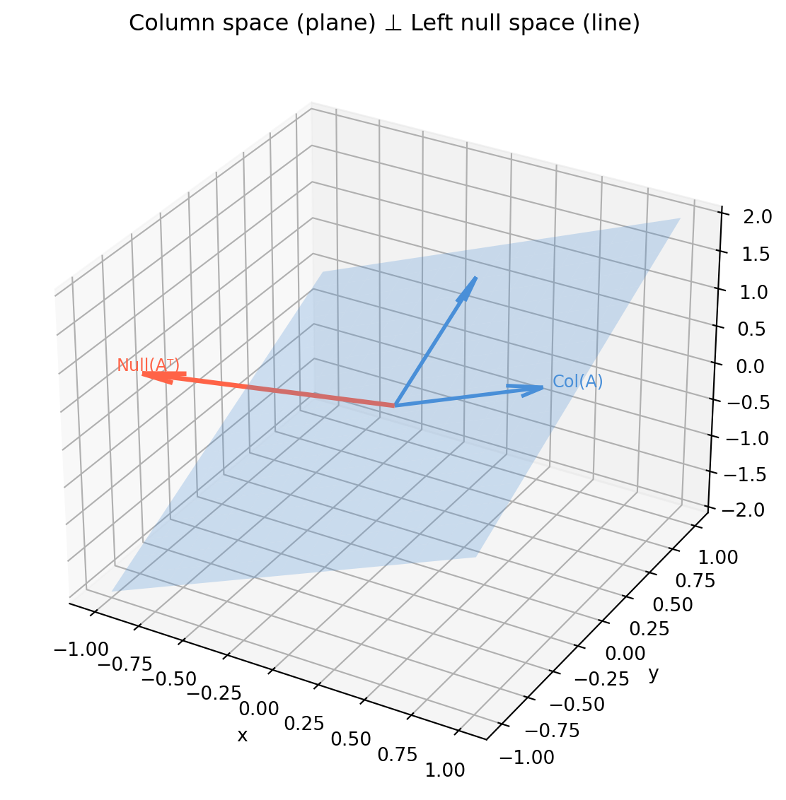
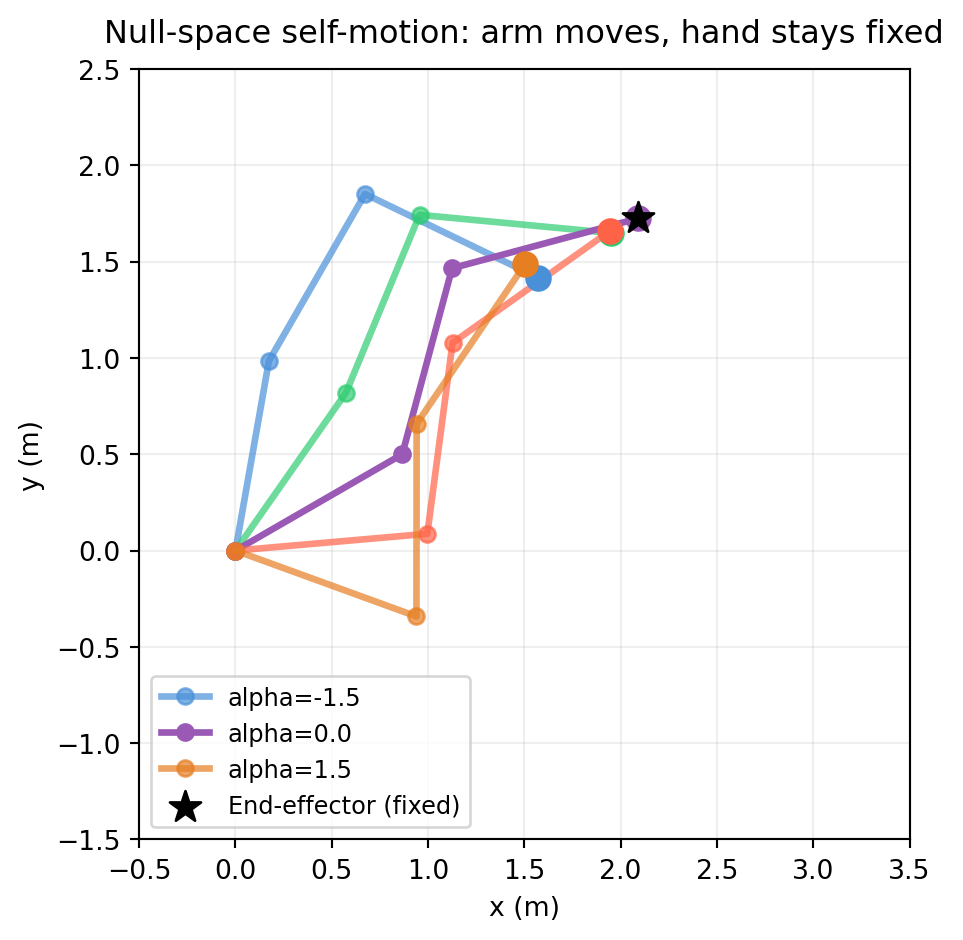

Gaussian elimination from Chapter 2 produces a triangular matrix that you back-substitute to find a solution. Reduced row echelon form (RREF) takes elimination further — all the way to the simplest possible matrix — so that the solution structure is visible directly, without any substitution.
3.1.1 Row Echelon Form (REF)
A matrix is in row echelon form when:
All zero rows are at the bottom.
Each row’s leading entry (pivot) is strictly to the right of the pivot in the row above.
Every matrix has a unique RREF. No matter what row operations you apply, you always arrive at the same RREF — it is an intrinsic property of the matrix.
import numpy as npimport sympydef rref(A):"""Return RREF and pivot column indices using SymPy for exact arithmetic.""" M = sympy.Matrix(A) R, pivots = M.rref()return np.array(R.tolist(), dtype=float), list(pivots)A = np.array([[2., 3., 1., 5.], [4., 7., 5., 12.], [2., 4., 4., 8.]])R, pivots = rref(A)print("RREF:")print(R)print(f"Pivot columns: {pivots}")
SymPy’s rref() uses exact rational arithmetic, avoiding floating-point pivot decisions. For numerical work, np.linalg.matrix_rank uses SVD-based rank detection internally, which is more reliable than threshold-based elimination.
3.1.3 Reading the Solution from RREF
Consider the augmented system \([A \mid \mathbf{b}]\) after row reduction to RREF. The pivot columns correspond to basic variables; non-pivot columns correspond to free variables.
The three solution cases from Chapter 2 are immediately visible from RREF. The code below applies RREF to examples of each and reads off the conclusion directly from the structure of the reduced matrix.
import numpy as npimport sympydef show_rref(aug_list, title): aug = np.array(aug_list, dtype=float) M = sympy.Matrix(aug_list) R, pivots = M.rref() R_np = np.array(R.tolist(), dtype=float) n_pivots =len(pivots) n_vars = aug.shape[1] -1 n_free = n_vars - n_pivotsprint(f"\n{'='*44}")print(f" {title}")print(f"{'='*44}")print(f"[A|b]:\n{aug}")print(f"RREF:\n{R_np}")print(f"rank = {n_pivots}, nullity = {n_free} → ", end='')# Check for inconsistency: a zero row in A with nonzero b entry inconsistent =any( np.all(np.abs(R_np[i, :-1]) <1e-10) andabs(R_np[i, -1]) >1e-10for i inrange(R_np.shape[0]) )if inconsistent:print("INCONSISTENT — no solution")elif n_free ==0:print("UNIQUE solution")else:print(f"INFINITELY MANY solutions ({n_free} free variable{'s'if n_free>1else''})")show_rref([[2, 1, 5], [1, 3, 7]],"Full rank — unique solution")show_rref([[2, 4, 6], [1, 2, 3]],"Rank-deficient, consistent — infinitely many")show_rref([[2, 4, 6], [1, 2, 5]],"Rank-deficient, inconsistent — no solution")
Set both left-hand-side rows proportional with different ratios on the right-hand side and the RREF reveals a zero row with a nonzero augmented entry — the signature of inconsistency.
3.1.6 Why RREF Matters Beyond Solving
RREF is not just a solving tool — it exposes structure:
The pivot columns of \(A\) form a basis for the column space of \(A\).
The number of pivots is the rank — confirmed in §3.2.
The null space basis vectors are read directly from the free-column coefficients, as shown in §3.2.
RREF of the augmented matrix \([A \mid I]\) produces \([I \mid A^{-1}]\) when \(A\) is invertible — a method for computing matrix inverses.
import numpy as npimport sympy# Computing inverse via RREF of [A | I]A = np.array([[2., 1.], [5., 3.]])n = A.shape[0]AI = sympy.Matrix(np.hstack([A, np.eye(n)]).tolist())R, _ = AI.rref()A_inv = np.array(R[:, n:].tolist(), dtype=float)print("A_inv via RREF:")print(A_inv.round(6))print("\nVerify A @ A_inv:")print((A @ A_inv).round(6)) # should be identity
A_inv via RREF:
[[ 3. -1.]
[-5. 2.]]
Verify A @ A_inv:
[[1. 0.]
[0. 1.]]
3.2 Rank and the Rank-Nullity Theorem
Rank is the single most informative number you can compute about a matrix. It tells you how many independent constraints your system imposes — and, by subtraction, how many degrees of freedom remain.
3.2.1 Definition of Rank
The rank of a matrix \(A\) is:
the number of pivot positions in its RREF,
the dimension of its column space,
the dimension of its row space.
All three definitions give the same number. The first is computational; the second and third are geometric — and they are equal by a non-obvious theorem.
The third method (SVD) is the most numerically robust: small singular values indicate near-linear-dependence. np.linalg.matrix_rank uses SVD internally with a default threshold of \(\max(M, N) \cdot \sigma_{\max} \cdot \epsilon\).
where \(\text{nullity}(A) = \dim(\text{Null}(A))\) is the number of free variables — the dimension of the solution space when \(\mathbf{b} = \mathbf{0}\).
Intuition.\(A\) maps \(\mathbb{R}^n\) into \(\mathbb{R}^m\). The rank counts the dimensions that “survive” the mapping (image dimension). The nullity counts the dimensions that “collapse” to zero. Together they account for all \(n\) input dimensions.
import numpy as npimport sympydef rank_nullity(A): m, n = A.shape r = np.linalg.matrix_rank(A) nullity = n - rprint(f"Shape: {m} × {n}")print(f"Rank: {r} (independent rows/columns)")print(f"Nullity: {nullity} (free variables, null space dimension)")print(f"Check: {r} + {nullity} = {r + nullity} = n = {n} ✓")return r, nullityprint("=== Full rank (3×3) ===")rank_nullity(np.array([[1.,0.,0.],[0.,1.,0.],[0.,0.,1.]]))print("\n=== Rank-2 (3×4) ===")rank_nullity(np.array([[1.,2.,0.,1.],[0.,0.,1.,3.],[1.,2.,1.,4.]]))print("\n=== Rank-1 (outer product) ===")u = np.array([1.,2.,3.])v = np.array([1.,1.,1.,1.])rank_nullity(np.outer(u, v))
The null space \(\text{Null}(A) = \{\mathbf{x} : A\mathbf{x} = \mathbf{0}\}\) is a subspace of \(\mathbb{R}^n\). Its basis vectors come directly from the free columns of the RREF.
Recipe:
Compute RREF of \(A\) (not augmented — we are solving \(A\mathbf{x}=\mathbf{0}\)).
Identify free variables (non-pivot columns).
For each free variable, set it to 1 and all other free variables to 0; solve for the basic variables. That vector is one null space basis vector.
import numpy as npimport sympydef null_space_basis(A):"""Return null space basis via RREF. Each column is a basis vector.""" M = sympy.Matrix(A)# sympy's nullspace() returns exact basis vectors ns = M.nullspace()ifnot ns:print("Null space is trivial {0}.")return np.zeros((A.shape[1], 0)) B = np.array([np.array(v.T.tolist()[0], dtype=float) for v in ns]).Treturn BA = np.array([[1., 2., 0., 3.], [0., 0., 1., 4.], [1., 2., 1., 7.]]) # row 3 = row 1 + row 2N = null_space_basis(A)print(f"Null space basis (columns):\n{N.round(4)}")print(f"\nVerify A @ N ≈ 0:\n{(A @ N).round(10)}")print(f"\nNull space dimension: {N.shape[1]} (nullity)")print(f"Rank: {np.linalg.matrix_rank(A)}")print(f"Sum: {N.shape[1]} + {np.linalg.matrix_rank(A)} = {N.shape[1]+np.linalg.matrix_rank(A)} = n = {A.shape[1]}")
Null space basis (columns):
[[-2. -3.]
[ 1. 0.]
[ 0. -4.]
[ 0. 1.]]
Verify A @ N ≈ 0:
[[0. 0.]
[0. 0.]
[0. 0.]]
Null space dimension: 2 (nullity)
Rank: 2
Sum: 2 + 2 = 4 = n = 4
Numerical null space via SVD — preferred for large or noisy matrices:
import numpy as npdef null_space_svd(A, tol=1e-10):"""Null space basis via SVD. Robust to near-zero singular values.""" U, s, Vt = np.linalg.svd(A, full_matrices=True) rank = np.sum(s > tol * s[0])return Vt[rank:].T # columns span the null spaceA = np.array([[1., 2., 0., 3.], [0., 0., 1., 4.], [1., 2., 1., 7.]])N_svd = null_space_svd(A)print(f"SVD null space shape: {N_svd.shape}")print(f"A @ N ≈ 0: max |A@N| = {np.abs(A @ N_svd).max():.2e}")
SVD null space shape: (4, 2)
A @ N ≈ 0: max |A@N| = 3.33e-16
3.2.4 Rank in Practice: What Low Rank Means
Situation
Matrix
Consequence
Sensor readings are correlated
Data matrix \(X\)
$(X) < $ features — PCA will find this
Robot has redundant joints
Jacobian \(J\)
\(\text{nullity}(J) > 0\) — self-motion exists
Camera calibration target is planar
Correspondence matrix
Degenerate configuration, infinite solutions
Feature vectors are identical
Gram matrix \(X^T X\)
Singular — least squares is ill-posed
import numpy as np# Simulate correlated sensor data: 3 sensors but only 2 independent signalsrng = np.random.default_rng(0)s1 = rng.standard_normal(100)s2 = rng.standard_normal(100)X = np.column_stack([s1, s2, 0.5*s1 +0.5*s2]) # sensor 3 is blend of 1 & 2print(f"Data matrix shape: {X.shape}")print(f"Rank: {np.linalg.matrix_rank(X)}") # 2, not 3print(f"Singular values: {np.linalg.svd(X, compute_uv=False).round(2)}")# Third singular value ≈ 0 — the linear dependence is exposed
How close does a rank-1 matrix have to be to full rank before matrix_rank changes its answer? The three panels below show the singular value spectrum for the same base matrix perturbed by \(\varepsilon I\) at three scales.
This demonstrates why rank is not a binary property in practice — it depends on a threshold. When you say “this matrix is rank-deficient,” you always mean relative to some tolerance.
3.3 The Four Fundamental Subspaces
Every matrix \(A \in \mathbb{R}^{m \times n}\) has four intrinsic subspaces — two in \(\mathbb{R}^n\) (the input space) and two in \(\mathbb{R}^m\) (the output space). Gilbert Strang calls them the “big picture” of linear algebra. They answer the question: what does \(A\) do to space?
3.3.1 Definitions
Subspace
Symbol
Lives in
Definition
Dimension
Column space
\(\text{Col}(A)\)
\(\mathbb{R}^m\)
All vectors \(A\mathbf{x}\); span of columns of \(A\)
\(r\)
Null space
\(\text{Null}(A)\)
\(\mathbb{R}^n\)
All \(\mathbf{x}\) with \(A\mathbf{x}=\mathbf{0}\)
\(n-r\)
Row space
\(\text{Row}(A)\)
\(\mathbb{R}^n\)
Span of rows of \(A\) = \(\text{Col}(A^T)\)
\(r\)
Left null space
\(\text{Null}(A^T)\)
\(\mathbb{R}^m\)
All \(\mathbf{y}\) with \(A^T\mathbf{y}=\mathbf{0}\)
\(m-r\)
where \(r = \text{rank}(A)\).
Dimensions add up correctly: - In \(\mathbb{R}^n\): \(r + (n-r) = n\) ✓ - In \(\mathbb{R}^m\): \(r + (m-r) = m\) ✓
3.3.2 Orthogonality Relations
The four subspaces are not independent — they come in orthogonal pairs:
\[\text{Row}(A) \perp \text{Null}(A) \qquad \text{(both in } \mathbb{R}^n\text{)}\]\[\text{Col}(A) \perp \text{Null}(A^T) \qquad \text{(both in } \mathbb{R}^m\text{)}\]
Proof sketch. If \(\mathbf{x} \in \text{Null}(A)\) then \(A\mathbf{x} = \mathbf{0}\). Every row \(\mathbf{r}_i\) of \(A\) satisfies \(\mathbf{r}_i \cdot \mathbf{x} = 0\) — every row is orthogonal to every null space vector. The rows span the row space, so the entire row space is orthogonal to the null space.
import numpy as npimport sympyA = np.array([[1., 2., 0., 3.], [0., 0., 1., 4.], [1., 2., 1., 7.]]) # rank 2# Column space basis: pivot columns of AM = sympy.Matrix(A.tolist())_, pivots = M.rref()col_basis = A[:, list(pivots)]# Null space basis (input space, R^4)ns = M.nullspace()null_basis = np.array([np.array(v.T.tolist()[0], dtype=float) for v in ns]).T# Row space basis: non-zero rows of RREFR_np = np.array(M.rref()[0].tolist(), dtype=float)nonzero = [i for i inrange(R_np.shape[0]) if np.any(np.abs(R_np[i]) >1e-12)]row_basis = R_np[nonzero]# Left null space basis (output space, R^3)Mt = sympy.Matrix(A.T.tolist())lns = Mt.nullspace()left_null_basis = np.array([np.array(v.T.tolist()[0], dtype=float) for v in lns]).Tprint("=== Dimensions ===")print(f"rank r = {len(pivots)}")print(f"Col(A): dim {col_basis.shape[1]} (in R^{A.shape[0]})")print(f"Null(A): dim {null_basis.shape[1]} (in R^{A.shape[1]})")print(f"Row(A): dim {row_basis.shape[0]} (in R^{A.shape[1]})")print(f"Null(A^T): dim {left_null_basis.shape[1]} (in R^{A.shape[0]})")print("\n=== Orthogonality checks ===")print(f"Row(A) ⊥ Null(A): {np.abs(row_basis @ null_basis).max():.2e} (should be ~0)")print(f"Col(A) ⊥ Null(A^T): {np.abs(col_basis.T @ left_null_basis).max():.2e} (should be ~0)")
=== Dimensions ===
rank r = 2
Col(A): dim 2 (in R^3)
Null(A): dim 2 (in R^4)
Row(A): dim 2 (in R^4)
Null(A^T): dim 1 (in R^3)
=== Orthogonality checks ===
Row(A) ⊥ Null(A): 0.00e+00 (should be ~0)
Col(A) ⊥ Null(A^T): 0.00e+00 (should be ~0)
3.3.3 Visualising in 3D
For a \(3 \times 3\) rank-2 matrix, the four subspaces can be drawn in \(\mathbb{R}^3\): a plane and a line (orthogonal complement pair) in the input space, and the same in the output space.
import numpy as npimport matplotlib.pyplot as plt# 3×3 rank-2 matrixA = np.array([[1., 0., 1.], [0., 1., 1.], [1., 1., 2.]]) # row3 = row1 + row2# Column space: span of first two columns (rank-2 plane in R^3)c1, c2 = A[:, 0], A[:, 1]# Left null space: vector orthogonal to col space_, _, Vt_m = np.linalg.svd(A.T)lnull = Vt_m[-1]fig = plt.figure(figsize=(7, 6))ax = fig.add_subplot(111, projection='3d')# Draw column space as a shaded planes, t = np.linspace(-1, 1, 20), np.linspace(-1, 1, 20)S, T = np.meshgrid(s, t)plane = np.einsum('i,jk->ijk', c1, S) + np.einsum('i,jk->ijk', c2, T)ax.plot_surface(plane[0], plane[1], plane[2], alpha=0.25, color='#4a90d9')# Column space basis vectorsorigin = np.zeros(3)for vec in [c1, c2]: ax.quiver(*origin, *vec*0.8, color='#4a90d9', lw=2, arrow_length_ratio=0.2)# Left null space vectorax.quiver(*origin, *lnull*1.5, color='tomato', lw=2.5, arrow_length_ratio=0.15)ax.text(*(lnull *1.65), 'Null(Aᵀ)', color='tomato', fontsize=9)ax.text(*(c1 *0.85), 'Col(A)', color='#4a90d9', fontsize=9)ax.set_title('Column space (plane) ⊥ Left null space (line)', pad=8)ax.set_xlabel('x'); ax.set_ylabel('y'); ax.set_zlabel('z')plt.tight_layout()plt.show()

3.3.4 Physical Meaning in Each Field
Machine learning — column space as “reachable outputs”. The columns of a weight matrix \(W\) span all possible pre-activation vectors. If your target \(\mathbf{y}\) is not in \(\text{Col}(W)\), the network cannot represent it exactly — least squares finds the closest point in the column space.
Computer vision — left null space as “calibration failure”. In camera calibration, the left null space of the measurement matrix contains the degenerate motion directions. If your calibration target stays in one plane, the system matrix loses rank and its left null space is non-trivial — certain intrinsic parameters become unidentifiable.
Robotics — null space as “self-motion”. The null space of the Jacobian matrix \(J\) contains all joint velocity vectors \(\dot{\mathbf{q}}\) that produce zero end-effector velocity. These are the self-motions: the arm moves without the hand moving. The rank-nullity theorem guarantees \(\dim(\text{Null}(J)) = n_\text{joints} - \text{rank}(J)\) such independent self-motions. Chapter 22 works this out in full.
3.3.5 The Fundamental Theorem of Linear Algebra
Strang’s “Fundamental Theorem” states:
\(\text{Col}(A)\) and \(\text{Null}(A^T)\) are orthogonal complements in \(\mathbb{R}^m\).
\(\text{Row}(A)\) and \(\text{Null}(A)\) are orthogonal complements in \(\mathbb{R}^n\).
Every vector in \(\mathbb{R}^n\) decomposes uniquely into a row-space part and a null-space part:
Only the row-space part \(\mathbf{x}_r\) contributes to \(A\mathbf{x}\); the null-space part \(\mathbf{x}_n\) is annihilated.
import numpy as npA = np.array([[1., 0., 1.], [0., 1., 1.]]) # 2×3, rank 2, nullity 1# Project an arbitrary vector onto row space and null spacex = np.array([3., 2., 1.])# Row space projection: x_r = Vr @ Vr.T @ x (Vr = first r right singular vecs)U, s, Vt = np.linalg.svd(A, full_matrices=True)r = np.linalg.matrix_rank(A)Vr = Vt[:r].T # columns are row space basisx_row = Vr @ (Vr.T @ x) # projection onto row spacex_null = x - x_row # orthogonal complementprint(f"x = {x}")print(f"x_row = {x_row.round(4)} (row space part)")print(f"x_null = {x_null.round(4)} (null space part)")print(f"A @ x_row = {(A @ x_row).round(4)} (= A @ x)")print(f"A @ x_null = {(A @ x_null).round(10)} (= 0, as expected)")print(f"Orthogonal: x_row · x_null = {x_row @ x_null:.2e}")
x = [3. 2. 1.]
x_row = [1.6667 0.6667 2.3333] (row space part)
x_null = [ 1.3333 1.3333 -1.3333] (null space part)
A @ x_row = [4. 3.] (= A @ x)
A @ x_null = [0. 0.] (= 0, as expected)
Orthogonal: x_row · x_null = 4.88e-15
This decomposition is the foundation of least-squares theory (Chapter 16) and the pseudoinverse (Chapter 18).
3.4 Observability and Identifiability via Rank
Rank deficiency is not an abstract algebraic curiosity — it has concrete physical meaning. A rank-deficient measurement matrix means you cannot recover certain states or parameters from your measurements, no matter how much data you collect. This section connects the algebra to two engineering concepts: observability in control/estimation and identifiability in system calibration.
3.4.1 Observability: Can You Recover the State?
In a linear dynamical system, the observability matrix tells you whether the initial state \(\mathbf{x}_0\) can be determined from \(T\) output measurements. For a system \(\mathbf{x}_{k+1} = F\mathbf{x}_k\), \(\mathbf{y}_k = H\mathbf{x}_k\):
The system is fully observable if and only if \(\text{rank}(\mathcal{O}) = n\) (where \(n\) = state dimension). Intuitively: \(\mathcal{O}\) maps initial state to output sequence; full rank means the mapping is injective — different initial states give different outputs.
import numpy as npdef observability_matrix(F, H, T):"""Build T-step observability matrix for x_{k+1}=Fx_k, y_k=Hx_k.""" n = F.shape[0] rows = [] FkH = H.copy()for k inrange(T): rows.append(FkH) FkH = FkH @ Freturn np.vstack(rows)# Example: 2D position + velocity state, position-only measurement# State: [pos_x, pos_y, vel_x, vel_y], dt=0.1 sdt =0.1F = np.array([[1, 0, dt, 0], [0, 1, 0, dt], [0, 0, 1, 0], [0, 0, 0, 1]]) # constant velocity modelH_pos = np.array([[1, 0, 0, 0], [0, 1, 0, 0]]) # observe position onlyH_vel = np.array([[0, 0, 1, 0], [0, 0, 0, 1]]) # observe velocity onlyfor label, H in [("Position sensors", H_pos), ("Velocity sensors", H_vel)]: O = observability_matrix(F, H, T=4) r = np.linalg.matrix_rank(O)print(f"{label}: O shape={O.shape}, rank={r}, "f"{'OBSERVABLE'if r ==4else'NOT fully observable'}")
Position sensors: O shape=(8, 4), rank=4, OBSERVABLE
Velocity sensors: O shape=(8, 4), rank=2, NOT fully observable
What rank deficiency means here: if \(\text{rank}(\mathcal{O}) < n\), the null space of \(\mathcal{O}\) contains initial states that produce identical output sequences. No amount of measurement can distinguish them.
3.4.2 Unobservable Subspace
The null space of \(\mathcal{O}\) is the unobservable subspace — the set of initial state perturbations that leave all outputs unchanged.
import numpy as np# Partially observable system: only measure x1, and x3 doesn't affect x1F = np.array([[0.9, 0.1, 0.0], [0.0, 0.8, 0.0], [0.0, 0.0, 0.7]]) # x3 is decoupledH = np.array([[1.0, 0.0, 0.0]]) # observe only x1O = observability_matrix(F, H, T=3)r = np.linalg.matrix_rank(O)print(f"Observability matrix rank: {r} (out of 3)")# Find unobservable subspace_, s, Vt = np.linalg.svd(O)unobservable = Vt[r:].Tprint(f"Unobservable direction(s):\n{unobservable.round(4)}")print(f"\nInterpretation: state perturbations along these directions")print(f"produce zero output change — you can never observe them.")
Observability matrix rank: 2 (out of 3)
Unobservable direction(s):
[[0.]
[0.]
[1.]]
Interpretation: state perturbations along these directions
produce zero output change — you can never observe them.
3.4.3 Identifiability: Can You Calibrate the System?
Identifiability is the calibration analogue of observability. Given a sensor model \(\mathbf{y} = A(\boldsymbol{\theta})\mathbf{x}\) where \(\boldsymbol{\theta}\) are unknown parameters, identifiability asks whether the calibration data uniquely determines \(\boldsymbol{\theta}\).
Linearising around a nominal \(\boldsymbol{\theta}_0\), identifiability reduces to a rank condition on the sensitivity matrix (or Fisher information matrix).
Camera calibration example. A camera with intrinsic matrix \(K\) and extrinsic pose \([R \mid \mathbf{t}]\) projects 3D points to pixels. If all calibration target points are coplanar, the calibration matrix loses rank — certain parameters (e.g., depth scale) become unidentifiable.
import numpy as npdef sensitivity_matrix(param_fn, theta0, delta=1e-5):""" Numerical Jacobian of a measurement function w.r.t. parameters. param_fn: callable(theta) -> measurements vector Returns J where J[i,j] = d(meas_i)/d(theta_j) """ y0 = param_fn(theta0) m, p =len(y0), len(theta0) J = np.zeros((m, p))for j inrange(p): dth = np.zeros(p) dth[j] = delta J[:, j] = (param_fn(theta0 + dth) - param_fn(theta0 - dth)) / (2* delta)return J# Toy example: fit a + b*x + c*x^2 to dataxs = np.linspace(0, 1, 20)def polynomial_predictions(params): a, b, c = paramsreturn a + b*xs + c*xs**2theta0 = np.array([1.0, 2.0, 0.5])J = sensitivity_matrix(polynomial_predictions, theta0)print(f"Sensitivity matrix shape: {J.shape}")print(f"Rank: {np.linalg.matrix_rank(J)} (= number of identifiable parameters)")print(f"Singular values: {np.linalg.svd(J, compute_uv=False).round(4)}")# Now: what if x range is tiny? (near-collinearity)xs_tiny = np.linspace(0.0, 0.001, 20)def poly_tiny(params): a, b, c = paramsreturn a + b*xs_tiny + c*xs_tiny**2J_tiny = sensitivity_matrix(poly_tiny, theta0)svs = np.linalg.svd(J_tiny, compute_uv=False)print(f"\nTiny x range — singular values: {svs.round(6)}")print(f"Condition number: {svs[0]/svs[-1]:.2e} ← near rank-deficient")print("b and c become nearly unidentifiable (can't separate linear from quadratic)")
Sensitivity matrix shape: (20, 3)
Rank: 3 (= number of identifiable parameters)
Singular values: [5.3304 1.6376 0.2552]
Tiny x range — singular values: [4.472137e+00 1.357000e-03 0.000000e+00]
Condition number: 1.22e+07 ← near rank-deficient
b and c become nearly unidentifiable (can't separate linear from quadratic)
3.4.4 Rank Deficiency from Symmetry
A common source of identifiability failure is symmetry in the data — when the measurement geometry has a transformation that leaves the model output unchanged.
Example — GPS without altitude variation. Estimating a GPS receiver’s clock bias along with position requires observations from satellites at different elevations. If all visible satellites are near the horizon (flat geometry), the vertical component and clock bias become nearly rank-deficient — a known failure mode in urban canyons.
import numpy as npdef gps_dilution(satellite_directions):""" GPS DOP (dilution of precision) via rank of observation matrix. Each row: [dx, dy, dz, 1] — unit vector to satellite + clock column. """ n =len(satellite_directions) G = np.column_stack([satellite_directions, np.ones(n)]) # clock bias column GtG = G.T @ G kappa = np.linalg.cond(GtG) r = np.linalg.matrix_rank(G)return r, kappa# Good geometry: satellites spread in elevation and azimuthsats_good = np.array([ [ 0.57, 0.00, 0.82], # NE, high elevation [-0.57, 0.00, 0.82], # NW, high elevation [ 0.00, 0.57, 0.82], # N, high elevation [ 0.00, -0.57, 0.82], # S, high elevation [ 0.00, 0.00, 1.00], # zenith])# Bad geometry: all satellites near horizon (urban canyon)sats_bad = np.array([ [ 1.00, 0.00, 0.05], [-1.00, 0.00, 0.05], [ 0.00, 1.00, 0.05], [ 0.00, -1.00, 0.05], [ 0.71, 0.71, 0.05],])for label, sats in [("Good geometry", sats_good), ("Urban canyon", sats_bad)]: r, kappa = gps_dilution(sats)print(f"{label}: rank={r}, condition number={kappa:.1e}")
Good geometry: rank=4, condition number=5.8e+02
Urban canyon: rank=3, condition number=6.5e+17
3.4.5 Diagnostic Checklist
When a calibration or estimation problem gives poor results:
Compute np.linalg.matrix_rank(A) — is it full rank?
Check singular values — are any near zero relative to the largest?
Examine the null space — what physical state/parameter does it correspond to?
Fix the data collection, not the math — add more diverse measurements that break the symmetry causing rank deficiency.
The null space of the measurement matrix is a geometric guide to what additional data you need to collect. If the null space direction corresponds to “all targets at the same range,” you need targets at varied distances.
3.5 Application: Kinematic Redundancy in a 7-DoF Arm
A 7-degree-of-freedom robot arm — like the Franka Emika Panda or the KUKA iiwa — has one more joint than the six degrees of freedom needed to place and orient a rigid end-effector in 3D space. That extra degree of freedom is the redundancy, and it lives in the null space of the Jacobian.
This section shows how to compute the Jacobian’s null space, how to use it for null-space motion (joint motion that doesn’t move the hand), and why the rank-nullity theorem guarantees exactly one such independent self-motion.
3.5.1 The Jacobian as a Linear Map
The Jacobian\(J(\mathbf{q}) \in \mathbb{R}^{6 \times 7}\) relates small joint velocity changes \(\dot{\mathbf{q}} \in \mathbb{R}^7\) to end-effector velocity \(\dot{\mathbf{x}} \in \mathbb{R}^6\):
At non-singular configurations \(\text{rank}(J) = 6\), so \(\text{nullity}(J) = 1\): exactly one independent self-motion direction exists.
3.5.2 A Simplified Planar 3-DoF Example
We start with a 3-DoF planar arm (2D end-effector position), which has \(\text{nullity} = 1\). This is simpler to visualise and numerically identical to the 7-DoF case.
import numpy as npdef planar_fk(q, L):""" Forward kinematics for a planar n-link arm. q: joint angles (radians), L: link lengths Returns end-effector (x, y). """ x, y, angle =0.0, 0.0, 0.0for qi, li inzip(q, L): angle += qi x += li * np.cos(angle) y += li * np.sin(angle)return np.array([x, y])def planar_jacobian(q, L):""" Analytical Jacobian for planar arm: J[i,j] = d(x_i)/d(q_j). Shape (2, n_joints). """ n =len(q) J = np.zeros((2, n)) cumulative_angles = np.cumsum(q)for j inrange(n):# joint j affects all links from j onwardfor k inrange(j, n): angle_k = cumulative_angles[k] J[0, j] +=-L[k] * np.sin(angle_k) # dx/dq_j J[1, j] += L[k] * np.cos(angle_k) # dy/dq_jreturn J# 3-link arm, equal link lengthsL = [1.0, 1.0, 1.0]q = np.array([np.pi/6, np.pi/4, -np.pi/3])J = planar_jacobian(q, L)r = np.linalg.matrix_rank(J)print(f"Jacobian shape: {J.shape}")print(f"Rank: {r} (= end-effector DOF)")print(f"Nullity: {J.shape[1] - r} (= redundant DOF)")print(f"\nJacobian:\n{J.round(4)}")
The five arm configurations below all share the same end-effector position — they differ only by moving along the null vector of the Jacobian.
import numpy as npimport matplotlib.pyplot as pltdef draw_arm(ax, q, L, color='#4a90d9', alpha=1.0, label=None):"""Draw a planar arm configuration.""" positions = [(0, 0)] angle =0.0for qi, li inzip(q, L): angle += qi x = positions[-1][0] + li * np.cos(angle) y = positions[-1][1] + li * np.sin(angle) positions.append((x, y)) xs, ys =zip(*positions) ax.plot(xs, ys, '-o', color=color, lw=2.5, markersize=6, alpha=alpha, label=label) ax.scatter(*positions[-1], color=color, s=80, zorder=5)L = [1.0, 1.0, 1.0]q_base = np.array([np.pi/6, np.pi/4, -np.pi/3])null_v = null_space_svd(planar_jacobian(q_base, L)).flatten()colors = ['#4a90d9', '#2ecc71', '#9b59b6', 'tomato', '#e67e22']fig, ax = plt.subplots(figsize=(7, 5))alphas = np.linspace(-1.5, 1.5, 5)for i, alpha inenumerate(alphas): q_new = q_base + alpha * null_v draw_arm(ax, q_new, L, color=colors[i %len(colors)], alpha=0.7+0.3*(i ==2), label=f'alpha={alpha:.1f}'if i in [0, 2, 4] elseNone)# Mark the end-effector (same for all)ee = planar_fk(q_base, L)ax.scatter(*ee, color='black', s=150, zorder=10, marker='*', label='End-effector (fixed)')ax.set_xlim(-0.5, 3.5); ax.set_ylim(-1.5, 2.5)ax.set_aspect('equal')ax.set_xlabel('x (m)'); ax.set_ylabel('y (m)')ax.set_title('Null-space self-motion: arm moves, hand stays fixed', pad=10)ax.legend(fontsize=9)ax.grid(True, alpha=0.2)plt.tight_layout()plt.show()

3.5.5 Self-Motion Across Different Configurations
The null vector changes with configuration — self-motion at one arm pose is different from self-motion at another. The two panels compare a generic configuration and a near-singular one.
When the arm reaches a kinematic singularity, \(\text{rank}(J)\) drops below 6 (or 2 for the planar arm). The null space suddenly grows — more self-motions appear, but the end-effector loses the ability to move in certain directions.
At the stretched configuration, \(\sigma_{\min} \approx 0\): the arm cannot move its end-effector along the direction of the outstretched links. Motion planning algorithms must avoid (or carefully handle) configurations near singularities. Chapter 22 develops this with the full 6-DoF velocity Jacobian.
3.5.7 Key Takeaways
A redundant arm (\(n > 6\) joints) has a non-trivial null space for its Jacobian. The rank-nullity theorem guarantees \(\text{nullity}(J) = n - 6\) independent self-motion directions at non-singular configurations.
Null-space self-motions let the arm avoid obstacles, stay away from joint limits, or optimise secondary objectives (e.g., manipulability) without disturbing the end-effector.
Singular configurations reduce \(\text{rank}(J)\), expand the null space, and simultaneously shrink the end-effector’s reachable velocity directions.
Computing null space via SVD (Vt[rank:]) is numerically preferable to RREF for robot Jacobians, which have continuous-valued entries.
3.6 Exercises
3.1 Without using Python, bring the following matrix to RREF and identify all pivot and free columns:
How many solutions does \(A\mathbf{x} = \mathbf{b}\) have for an arbitrary consistent \(\mathbf{b}\)?
3.2 A matrix \(A \in \mathbb{R}^{5 \times 8}\) has rank 3. State the dimensions of all four fundamental subspaces.
3.3 You are told that \(\mathbf{v}_1 = [1, 0, -1, 0]^T\) and \(\mathbf{v}_2 = [0, 1, 0, -1]^T\) are both in the null space of a matrix \(A \in \mathbb{R}^{3 \times 4}\). What is the minimum possible rank of \(A\)? What is the maximum? Is there any constraint on \(m = 3\) vs. the null space dimension?
3.4 The observability matrix for a system with \[F = \begin{pmatrix}1&1\\0&1\end{pmatrix}, \quad H = \begin{pmatrix}1&0\end{pmatrix}\] is \(\mathcal{O} = [H^T, (HF)^T]^T\). Compute \(\mathcal{O}\) by hand and determine whether the system is observable.
3.5 Two students are debating: “Adding more equations to a system can never decrease the rank.” Is this true? Prove it or give a counterexample.
3.6(Harder) Prove that \(\text{rank}(AB) \leq \min(\text{rank}(A), \text{rank}(B))\). (Hint: think about what the column space of \(AB\) is as a subset of the column space of \(A\).)
3.7 A 3-DoF planar robot arm is near a configuration where its Jacobian has a very small second singular value (\(\sigma_2 = 0.02\), while \(\sigma_1 = 3.1\)). What does this tell you about the arm’s mobility? Would you compute the null space with RREF or SVD here, and why?
3.7 Solutions
Solution 3.1
Starting augmented matrix (no \(\mathbf{b}\) needed for RREF of \(A\)):
The large null space (dimension 5) means this system has 5 degrees of freedom of self-motion — physically meaningful in robotics (8-DoF arm, 3-DoF task space).
Solution 3.3
Since \(\mathbf{v}_1\) and \(\mathbf{v}_2\) are both in \(\text{Null}(A)\) and are linearly independent (they have non-overlapping nonzero positions), the null space has dimension at least 2.
By rank-nullity: \(\text{rank}(A) + \text{nullity}(A) = 4\). If \(\text{nullity}(A) \geq 2\), then \(\text{rank}(A) \leq 2\).
Minimum rank: 2 (nullity exactly 2, which is consistent)
Maximum rank: 2 (same bound — nullity \(\geq 2\) means rank \(\leq 2\))
So rank is exactly 2.
Constraint from \(m = 3\): rank \(\leq \min(m, n) = \min(3, 4) = 3\), so rank could in principle be 3. But having two independent null vectors forces rank \(\leq 2\). The row dimension \(m = 3\) is not the binding constraint here — the null space structure is.
import numpy as np# Construct A with the given null vectorsv1 = np.array([1., 0., -1., 0.])v2 = np.array([0., 1., 0., -1.])# A must satisfy A @ v1 = 0 and A @ v2 = 0# Build A whose rows are orthogonal to v1 and v2# Row space of A must be orthogonal to span{v1, v2}# A row: a such that a·v1=0, a·v2=0 → a1-a3=0, a2-a4=0 → a3=a1, a4=a2A = np.array([[1., 0., 1., 0.], [0., 1., 0., 1.], [1., 1., 1., 1.]])print(f"Rank: {np.linalg.matrix_rank(A)}")print(f"A @ v1 = {A @ v1}")print(f"A @ v2 = {A @ v2}")
\(\det(\mathcal{O}) = 1 \cdot 1 - 0 \cdot 1 = 1 \neq 0\). Therefore \(\text{rank}(\mathcal{O}) = 2 = n\), and the system is fully observable.
Physical interpretation: even though we only measure \(x_1\), the dynamics (\(x_1\) evolves as \(x_1 + x_2\)) couple \(x_2\) into future \(x_1\) measurements. After two time steps, both \(x_1\) and \(x_2\) have been “seen” through \(x_1\).
import numpy as npF = np.array([[1.,1.],[0.,1.]])H = np.array([[1.,0.]])O = np.vstack([H, H @ F])print(f"O =\n{O}")print(f"rank(O) = {np.linalg.matrix_rank(O)}")
O =
[[1. 0.]
[1. 1.]]
rank(O) = 2
Solution 3.5
True. Adding equations (rows) to a matrix cannot decrease the rank.
Proof. Let \(A \in \mathbb{R}^{m \times n}\) and let \(A'\) be \(A\) with one additional row \(\mathbf{r}^T\). The column space of \(A'\) contains the column space of \(A\) as a subset:
Proof. Any vector in \(\text{Col}(AB)\) has the form \(AB\mathbf{x} = A(B\mathbf{x})\) — it is \(A\) applied to some vector \(B\mathbf{x}\). Therefore:
Proof. Each column of \(AB\) is \(A\) times a column of \(B\). So the columns of \(AB\) are in the span of \(A\)’s columns of \(B\)… more precisely: \(AB = A \cdot B\) where each column of \(AB\) is a linear combination of columns of \(A\) weighted by a column of \(B\). Alternatively, apply the transpose: \(\text{rank}((AB)^T) = \text{rank}(B^T A^T) \leq \text{rank}(B^T) = \text{rank}(B)\).
A smallest singular value of \(\sigma_2 = 0.02\) (while \(\sigma_1 = 3.1\)) means the arm is near a kinematic singularity in one direction. Specifically:
The arm can move freely along the first singular direction (gain \(\approx 3.1\)).
Motion along the second singular direction is severely restricted: producing unit end-effector velocity in that direction requires joint velocities of magnitude \(\sim 1/0.02 = 50\) rad/s — physically infeasible.
The arm is not fully singular (rank is still 2), but it is ill-conditioned: small tracking errors in the nearly-singular direction cause enormous joint velocities.
Use SVD, not RREF. Near a singularity, \(\sigma_2 = 0.02\) is small but non-zero. RREF uses a hard threshold to decide rank and would classify this as either rank-1 or rank-2 depending on the threshold — a binary decision that loses the continuous information in \(\sigma_2\). SVD preserves the full spectrum and lets you make a continuous decision (e.g., damped pseudo-inverse with \(\sigma_2 / (\sigma_2^2 + \lambda^2)\) damping). This is the damped least-squares inverse used in all production robot controllers near singularities.
import numpy as np# Simulate near-singular JacobianJ_near_sing = np.array([[3.1, 0.0], [0.0, 0.02]]) # already in SVD form for clarityU, s, Vt = np.linalg.svd(J_near_sing)print(f"Singular values: {s}")print(f"Condition number: {s[0]/s[1]:.1f}")# Damped pseudo-inverse (prevents joint velocity explosion)lam =0.1# damping factors_damp = s / (s**2+ lam**2)J_pinv_damp = Vt.T @ np.diag(s_damp) @ U.Tprint(f"\nDamped pinv:\n{J_pinv_damp.round(3)}")print(f"Plain pinv would give:\n{np.linalg.pinv(J_near_sing).round(3)}")print(f"(Note: plain pinv gives {1/0.02:.0f}x amplification in singular direction)")